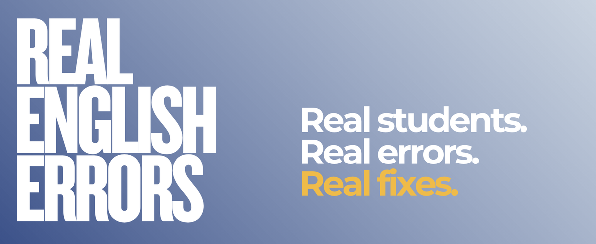

English exercises — select a lesson
Pick the travel phrasal verb that fits (“fall through”, “soak up”, “pull off”...), then choose the tense the time marker calls for. Missed sentences come back until all 80 are cleared.
Trade travel stories and weave in 40 phrasal verbs across five themes (“fall through”, “stumble upon”, “swing by”...). Tap A or B to mark who used each one, and tap a card to see its meaning.
Review this week's vocabulary (moving, work and everyday expressions), grammar corrections and pronunciation, then practise with fill-in-the-blanks, fix-the-mistake and pronunciation exercises and a short reading. Then send your results by email and WhatsApp.
Review this week's vocabulary (“advice” / “advise”), grammar (“offered to drop me off”, “fascinated by”, “it wasn't worth it”, “resist the urge” and more) and pronunciation (“toys”), then practise with word choice, fill-in-the-blanks, sound quizzes and a short reading. Then send your results by email and WhatsApp.
Review this week's grammar (“ago” with the simple past, “move to”, “put off doing”, “stop to eat”, “in the end” and more), a mini-lesson on “used to” vs “be used to”, and pronunciation (“scenery”), then practise with fill-in-the-blanks, choose the sentence, fix your own sentences and a short reading. Then send your results by email and WhatsApp.
A full YDS-style practice exam: 80 multiple-choice questions on vocabulary, grammar, reading and dialogues. Then copy your results and send them by email or WhatsApp.
A second full YDS-style practice exam: 80 multiple-choice questions on vocabulary, grammar, reading and dialogues. Then copy your results and send them by email or WhatsApp.
Review this week's vocabulary and expressions (“the eye of the storm”, “half full / half empty”) and grammar (“specific”), then practise with fill-in-the-blanks, fix-the-mistake exercises and a short reading. Then send your results by email and WhatsApp.
Review this week's vocabulary and expressions (“a fly on the wall”, “owned vs owed”), grammar (“if I were you”, “keep supporting”) and pronunciation (“chaotic”, “standardize”), then practise with fill-in-the-blanks, stress questions and a short reading. Then send your results by email and WhatsApp.
Review this week's vocabulary, grammar (irregular past verbs like blew and chose, “have a shower”, “he doesn't”) and pronunciation, then practise with fill-in-the-blanks, fix-the-mistake and pronunciation exercises and two short readings. Then send your results by email and WhatsApp.
Review this week's vocabulary, grammar (“me neither”, “to visit”, “it lowers”) and pronunciation, then practise with fill-in-the-blanks, fix-the-mistake and pronunciation exercises and three short readings. Then send your results by email and WhatsApp.
Review this week's vocabulary, grammar corrections and pronunciation, then practise with fill-in-the-blanks, fix-the-mistake and pronunciation exercises and two short readings. Then send your results by email and WhatsApp.
Review this week's vocabulary (“rest”, “unresponsive” / “quiet”, “accurate”, “mussels”, “oysters”) and grammar corrections, plus mini-lessons on subjects and objects and “if” with “be”. Then practise with fill-in-the-blanks and two short readings, and send your results by email and WhatsApp.
Review this week's vocabulary (“sunset”, “convinced”, “a prospect”), grammar (“used to” vs “be used to”, “another”, “within a year”, “any others”) and the pronunciation of “balcony”. Then practise with fill-in-the-blanks and a short reading, and send your results by email and WhatsApp.
Review this week's vocabulary (“good form”, “secure yourself”, “brewed coffee”, “run a business”, “delayed gratification”), grammar (“any other” + singular noun, “all” + plural noun) and pronunciation (“passion”, “patience” / “patient”, “psychological”). Then practise with fill-in-the-blanks, a pronunciation quiz and a short reading, and send your results by email and WhatsApp.
Review this week's vocabulary, grammar corrections and pronunciation, then practise with fill-in-the-blanks, fix-the-mistake and stress exercises and a short reading. Then send your results by email and WhatsApp.
Review this week's grammar (“I thought it'd be” vs “I think it'll be” and conditionals: the same sentence three ways) and pronunciation, then practise with fill-in-the-blanks, fix-the-mistake and pronunciation exercises and a short reading. Then send your results by email and WhatsApp.
Review this week's vocabulary (“acidic”, “the sixteen hundreds”, “church hurt”), grammar (“pay for”, “google something”, “that I thought was”) and pronunciation (“know”, “knowledge”), then practise with fill-in-the-blanks, fix-the-mistake and sound exercises and a short reading. Then send your results by email and WhatsApp.
Review this week's vocabulary (“sound the alarm bells”, “pretend to be”), grammar (“because it's”, “no one does”, “extra motivation”, “google something”) and pronunciation (“LDL / HDL”, “Adam and Eve”), then practise with fill-in-the-blanks, sound exercises and a short reading. Then send your results by email and WhatsApp.
Four short parts: fill in the vocabulary blanks, correct grammar mistakes, find the stressed syllable, and read two short stories. Then send your results by email.
Review this week's health vocabulary, grammar corrections and pronunciation, then practise with fill-in-the-blanks, fix-the-mistake, "already" and stressed-syllable exercises and a short reading. Then send your results by email and WhatsApp.
Review this week's clothing vocabulary (“oversized”, “crop top”, “half-sleeve”, “roll up” / “scrunch up”, “devalue”), grammar corrections and pronunciation, then practise with fill-in-the-blanks, fix-the-mistake, stressed-syllable exercises and a short reading. Then send your results by email and WhatsApp.
Review this week's vocabulary (“neckline”, “oration”, “surreptitiously”, “to vacillate”, “motley”), grammar corrections and pronunciation (“Plato”, “continuity”), then practise with fill-in-the-blanks, fix-the-mistake exercises and a short reading. Then send your results by email and WhatsApp.
Review this week's vocabulary, grammar corrections and pronunciation, then practise with fill-in-the-blanks, fix-the-mistake and pronunciation exercises and a short reading. Then send your results by email and WhatsApp.
Review this week's vocabulary, grammar corrections and pronunciation, then practise with fill-in-the-blanks, grammar and pronunciation exercises and two short readings. Then send your results by email and WhatsApp.
Review this week's vocabulary, grammar corrections and pronunciation, then practise with fill-in-the-blanks, fix-the-mistake and pronunciation exercises, a short reading and a mini-lesson on the 2nd conditional. Then send your results by email and WhatsApp.
Review this week's vocabulary and grammar corrections, then practise with fill-in-the-blanks and fix-the-mistake exercises and a short reading. Then send your results by email and WhatsApp.
Review this week's vocabulary (“in a row”, “meal prep”, “catch” vs. “catch up”, “accent” vs. “dialect”) and grammar (“learn” vs. “study”), then practise with fill-in-the-blanks, a learn/study exercise and a short reading. Then send your results by email and WhatsApp.
Review this week's vocabulary (“consume media”, “catch up on” / “catch up with”, “open concept”, “derailed”) and grammar (simple tenses for facts, “double past”), then practise with fill-in-the-blanks, fix-the-mistake exercises and a short reading. Then send your results by email and WhatsApp.
Review this week's vocabulary (“loopholes”, “damage deposit”, “willing to”, “suspicious”) and grammar (“well defined”, “booked myself”, “the best ___ is / are if”), plus pronunciation, then practise with fill-in-the-blanks, fix-the-mistake exercises and a short reading. Then send your results by email and WhatsApp.
Review this week's vocabulary (“make an investment”, “cater to”, “evict”, “jinx”) and grammar (uncountable nouns, “consider + -ing”, present perfect continuous + since, emphatic “do”, while / when), plus pronunciation, then practise with fill-in-the-blanks, fix-the-mistake exercises and a short reading. Then send your results by email and WhatsApp.
Review this week's vocabulary (“go well with”, “well regarded”, “make a mountain out of a molehill”, “the task at hand”) and grammar (arise – arose – arisen, “I've been ___ing since”, emphatic “do”), plus pronunciation, then practise with fill-in-the-blanks, pronunciation questions and a short reading. Then send your results by email and WhatsApp.
All 165 words, phrases and grammar patterns from our 12 sessions together. Say your own sentence, check the example, and rate yourself. Three short reviews, spaced out, keep them part of your English.
Review this week's vocabulary, grammar corrections and pronunciation, then practise with fill-in-the-blanks, grammar and pronunciation exercises and a short reading. Then send your results by email and WhatsApp.
Review this week's vocabulary (“in a row”, “secondhand embarrassment”), grammar (the third conditional, “ever since”) and pronunciation (“theses”), then practise with fill-in-the-blanks, a thesis/theses exercise and a short reading. Then send your results by email and WhatsApp.
Review this week's vocabulary (“carsick” / “seasick”, “switching out my wardrobe”, “nepotism”, “take after”) and grammar (“lent me one”, “of his own”, “mom's friend's daughter”, “come back from work”), then practise with word choice, fill-in-the-blanks and a short reading. Then send your results by email and WhatsApp.
Review this week's vocabulary (“life expectancy”, “well-off”, “live-in nanny”, “over-the-counter”), grammar (“revised my notes more”, “waiting for”, “consists of”) and pronunciation (“feathers”, “cautious”), then practise with fill-in-the-blanks, a pronunciation exercise and a short reading. Then send your results by email and WhatsApp.
Review this week's vocabulary, grammar corrections and pronunciation, then practise with fill-in-the-blanks and fix-the-mistake exercises, a short reading and a mini-lesson on verbs like "split". Then send your results by email and WhatsApp.
Review this week's vocabulary (“caveat”, “pull from”, “cater to”, “please”), grammar (“did really check”) and pronunciation (“maniac” / “manic” / “mania”, “ties” / “tights” / “thighs”), then practise with word choice, do/does/did sentences, sound quizzes and a short reading. Then send your results by email and WhatsApp.
Review this week's vocabulary (“sit for”, “not to be confused with”, “incentive”, “pin down”, “rooting for”), grammar (“diagnostic”) and pronunciation (“slimiest”, “nomenclature”, “edible” / “audible”, “caveat”), then practise with fill-in-the-blanks, a pronunciation quiz and a short reading. Then send your results by email and WhatsApp.